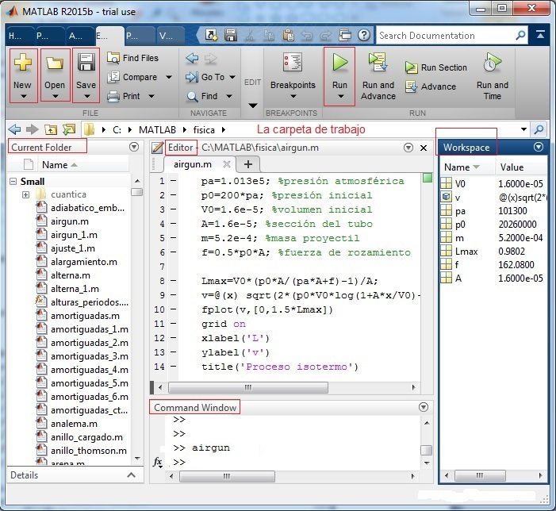
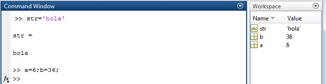
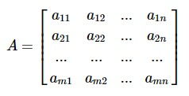
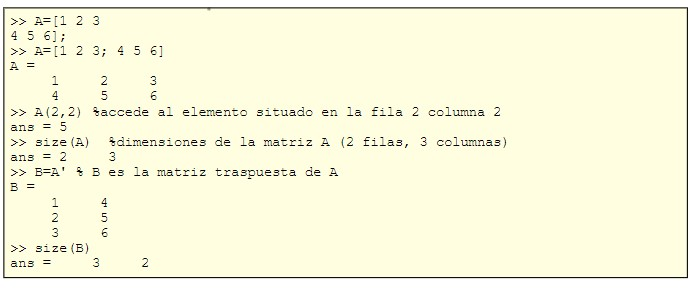
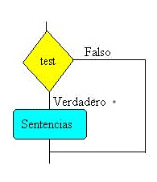
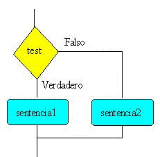
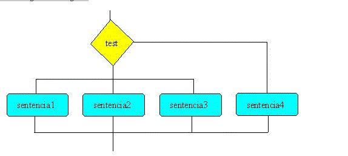

¿Qué es MatLab?
El lenguaje del cálculo técnico
Millones de ingenieros y científicos en todo el planeta utilizan MATLAB® para analizar y diseñar los sistemas y productos que transforman nuestro mundo. El lenguaje de MATLAB, basado en matrices, es la forma más natural del mundo para expresar las matemáticas computacionales. Las gráficas integradas facilitan la visualización de los datos y la obtención de información a partir de ellos. El entorno de escritorio invita a experimentar, explorar y descubrir. Todas estas herramientas y funciones de MATLAB están probadas rigurosamente y diseñadas para trabajar juntas.MATLAB le ayuda a llevar sus ideas más allá del escritorio. Puede ejecutar sus análisis en conjuntos de datos de mayor tamaño y expandirse a clusters y nubes. El código de MATLAB se puede integrar con otros lenguajes, lo que le permite implementar algoritmos y aplicaciones en sistemas web, empresariales o de producción.
MATLAB es la abreviatura de "matrix laboratory" (laboratorio de matrices). Aunque otros lenguajes de programación generalmente procesan los números de uno en uno, MATLAB® funciona principalmente con matrices y arreglos completos. Los aspectos fundamentales del lenguaje incluyen operaciones básicas, como la creación de variables, la indexación de arreglos, operaciones aritméticas y tipos de datos.
Partes del programa
- Command Window: es la ventana principal, cuyo propósito es realizar cálculos, correr programas (scripts), asignar valores a variables.
- Figure Window: se representan funciones de diversos modos en 2D y en 3D.
- Editor Window: crea y depura los ficheros script y función, se obtiene seleccionado en el menú File/New, o en el icono debajo de File
- Command History Window: guarda los comandos que se han introducido en Command Window
- Workspace Window: proporciona información acerca de las variables que se están utilizando.
- Current Folder Window: muestra los ficheros creados y guardados en la carpeta de trabajo
- Help Window: proporciona ayuda
En la figura 1, se muestra los elementos principales del Entorno de Desarrollo por defecto, seleccionando Layout/Default. En la barra superior, los botones New para crear un script o una función, Open para cargar un script o una función existente en la carpeta de trabajo (un fichero con extensión .m). Save para guardar un script o una función, nuevo o modificado. Run para correr un script como el que aparece en la ventana del editor Debajo de los botones aparece la ubicación de la carpeta de trabajo, que se selecciona con la flecha hacia abajo al lado de la lupa Debajo, se disponen cuatro ventanas: la carpeta de trabajo (Current floder) con la lista de los ficheros que podemos ordenar, la ventana del editor (Editor), debajo la ventana de comandos (Command window) y a la derecha la ventana de las variables (Workspace) que han sido creadas cuando corremos el script (Run) con los valores (Value) que guardan
Operaciones_aritméticas
Una vez que se introduce el comando después del símbolo >> y se pulsa la tecla Retorno, el comando se
ejecuta.
Introducimos 55/16 y pulsamos Retorno
>> 55/16 ans = 3.4375
Como ocurre en las calculadoras reutilizamos el último resultado para el siguiente cálculo. Por ejemplo,
calculamos el discriminante de una ecuación de segundo grado y lo utilizamos para calcular una de las
raíces reales. >> ans+11 ans = 14.4375
MATLAB utiliza la variable ans para guardar el resultado del cálculo. Más adelante veremos el concepto
de variable. Sumamos al resultado, 11 y al pulsar Retorno después de 11, obtenemos una nueva respuesta.
Los comando que permiten realizar operaciones son:
| # | Operación | Símbolo | Ejemplo |
|---|---|---|---|
| 1 | Suma | + | 6+2=8 |
| 2 | Diferencia | - | 6-2=4 |
| 3 | Producto | * | 6*2=12 |
| 4 | Cociente | / | 6/2=3 |
| 5 | Elevado a | ^ | 6^^2=36 |
Variables
Los datos se pueden almacenar en algún lugar de la memoria, asignando valores a nombres de variables.
- Los nombres de las variables deben de comenzar con una letra y pueden tener hasta 31 caracteres, que pueden ser números, letras, guión (-), subrrayado(_).
- La variable a es distinta de la variable A, MATLAB diferencia entre mayúsculas y minúsculas.
- Los nombres de las variables deben tener significado, primero se utilizan letras como a, x, y, pero cuando los programas son más complejos se llamarán posicion, velocidad, etc. nombres significativos.
- Los nombres de las variables no pueden coincidir con las palabras reservadas por MATLAB: sin, sqrt exp, etc.
- No están permitidos espacios entre caracteres.
Ejemplo
Para guardar el número 1.5 en un lugar de la memoria, lo asignamos a una variable denominada a, del siguiente modo:
>> a=1.5
a = 1.5000
En la misma línea se pueden asignar valores a más de una variable, separadas por comas , o punto y comas ;
>> a=6, b=34
a = 6
a = 34
Si no deseamos que se muestren en la ventana de comandos Command Window los valores de a y b escribiremos, alternativamente
>> a=6; b=36;
El punto y coma ; le indica a MATLAB que ejecute el comando pero que suprima la salida. Las variables no solamente pueden guardar números, sino también pueden guardar cadenas de caracteres (strings), delimitados por comillas simples.
>> str='hola'
str = hola
Las variables actualmente en memoria a, b y str tal como aprecen en la ventana Workspace. Las variables en la ventana Workspace pueden ser editadas para cambiar el valor que guardan, pueden ser borradas con la tecla Suprimir, o seleccionado delete en el menú Edit.
Vectores
La matriz (array) es el tipo fundamental de dato en MATLAB. La variable escalar que hemos estudiado en
la página anterior es un caso particular de matriz de dimensión 1×1. Los vectores son las matrices más
simples: un vector fila de m elementos es una matriz de dimensión m×1, un vector columna de n elementos
es una matriz de dimension 1×n. En esta página, vamos a ver como se crean vectores, como se realizan
operaciones con estas entidades y cómo se accede a sus elementos.
En muchos lenguajes, el primer elemento de un vector (array) tiene índice cero, en MATLAB tiene índice
uno.
En MATLAB representamos un vector del siguiente modo:
>> r=[5 3 -5]
r = 5 3 -5
>> r=[5,3,-5]
r = 5 3 -5
Para crear un vector fila se escribe sus elementos unos a continuación de los otros separados por espacios o comas y entre paréntesis cuadrados, tal como se muestra en el cuadro. Para crear un vector columna se escribe los elementos unos a continuación de los otros separados por puntos y comas o bien, en forma columna tal como se indica en el cuadro.
>> r=[5; 3; -5];
>> r=[5
3
-5]
r =
5
3
-5
Matrices
La matriz (array) es el tipo fundamental de dato en MATLAB.
Una matriz A de m filas y n columnas o de dimensión m×n se representa por 
Para acceder a un elemento situado en la fila i y en la columna j, Aij, se escribe A(i,j). La función size devuelve dos números que corresponden a las dimensiones de la matriz. La matriz traspuesta A' de la matriz A consiste en intercambiar filas por columnas: La primera columna de la matriz A es la primera fila de la matriz traspuesta A', la segunda columna de la matriz A se convierte en segunda fila de la matriz A', y así sucesivamente. La dimensión de la matriz tarspuesta A' es n×m, es decir n filas y m columnas
Creación de una matriz
La función size se utiliza para obtener las dimensiones de una matriz, mientras que la función length, se
utiliza para conocer el número de elementos de un vector.
Haciendo doble-clic en en nombre de la variable A en la ventana Workspace o bien, seleccionado la
variable en el menú Open variable, se muestra el contenido de la matriz A, en celdas que que contienen
los elementos de la matriz que podemos modificar, tal como se muestra en la figura
Funciones
Estamos acostumbrados a trabajar con funciones del tipo y=f(x) donde f(x) es una expresión matemática en
términos de la variable x. Se calcula un valor de y (salida) cuando se proporciona un valor de x
(entrada) en la expresión. MATLAB define muchas funciones como sin(x), sqrt(x), etc.
Podemos definir nuestras propias funciones guardarlas en un fichero y usarlas de un modo semejante a las
funciones predefinidas. En muchos casos las funciones son los componentes básicos dentro de un programa
de ordenador. Habitualmente, un programa se subdivide en tareas y cada una de ellas es llevada a cabo
por una función, a esta forma de resolver los problemas se denomina programación estructurada.
La principal ventaja de las funciones es la posibilidad de reutilizar el código en otros programas
distintos al cual fueron definidas.
La entrada y la salida puede ser una o varias variable, cada una de ellas puede
ser un escalar, un
vector o una matriz de cualquier tamaño.
Las funciones se crean del mismo modo que un script seleccionado en el menú New/Function y se guardan en
un fichero que tiene el mismo nombre que la función y extensión .m.
Condicionales
-
If
La sentencia if, actúa como cabría esperar. Si la condición es verdadera, la sentencia se ejecuta, de otro modo, se salta dicha sentencia, continuando la ejecución del programa con otras sentencias a continuación de ésta. La forma general de la sentencia if es: 
if (condicion)
sentencias
end -
If...else
La sentencia if...else completa la sentencia if, para realizar una acción alternativa.

Si la condición es verdadera se ejecuta las sentencias 1. La palabra clave else, significa que si la condición no es verdadera se ejecuta las sentencias 2. como la figura.
if (condicion)
sentencias_1
else
sentencias_2
end -
Switch
Lla sentencia if...elseif...else tiene varias ramas, el programa va por una u otra rama dependiendo del valor verdadero o falso de la expresión evaluada. A veces, es necesario, elegir entre varias alternativas, como se muestra en la siguiente figura
if (condicion1)
sentencias_1
elseif (condicion2)
sentencias_2
elseif (condicion3)
sentencias_3
else
sentencias_4
end
Referencias
La documentación de esta página fue tomada de Mathworks y MatlabPara posteriores consultas.